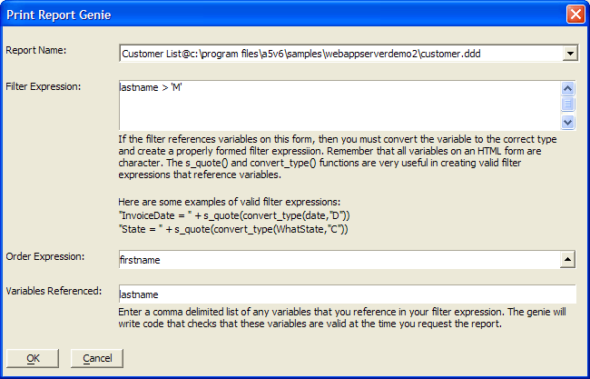

Writing Dialog Event Scripts
Form event scripts provide an opportunity to respond to or process the input from a dialog (form) web component. You can run scripts when the following events occur.
OnClick - Available only for AdvancedButton objects. The OnClick script runs every time the button is clicked.
Initialize - The Initialize event fires once, the first time the Form is run.
Validate - The Validate event fires when a form is submitted.
AfterValidate - The AfterValidate event fires after the Validate event.
Activate - The Activate event fires every time the form is run.
The Initialize event fires once, the first time the form is run. If the form is submitted back to itself (as is typically the case, so that the values in the Form's controls can be validated), the Initialize event is not fired.
The Initialize event is typically used to set initial values for controls on the Form.
If you need to execute code every time the Form is run, use the Activate event.
The Validate event fires when a form is submitted. Use this event to check that the value in a control is valid. If your script determines that an error has occurred, then you should set the following object properties:
|
CurrentControl.Has_Error = .t. CurrentControl.Error_Message = " |
You can also use this syntax:
|
CurrentForm.Controls. CurrentForm.Controls. |
If the CurrentControl.Has_Error property is ".T.", then the form will be redisplayed with the error message shown at the top of the form. The user can then make corrections and resubmit the form.
The AfterValidate event fires after the Validate event, but only if no object on the form has had its .Has_Error property set to ".T.".
A typical use of the AfterValidate event is to redirect control to another page in the application.
For example:
|
If Condition1 = .t. Then Response.Redirect("Page1.a5w") Else Response.Redirect("Page2.a5w") End If |
The Activate event fires every time the form is run. It fires after the Validate and AfterValidate events.
A typical use of the Activate event is to programatically populate drop down list boxes on the Form.
When you display the Form Events dialog and select "Declarations" from the Event list box, you to define any User Defined Functions that you want to be available to all Xbasic event code.
 Note : Use the declarations
section to define functions that you want to use in the event handlers.
Note : Use the declarations
section to define functions that you want to use in the event handlers.
Redirecting to a Different Page
In a dialog component, you place the code that will redirect to another
page in the AfterValidate event. If the user
has selected the destination from a DropDownBox, the name you assigned
to the DropDownBox control is the name of the variable that contains the
value.
You cannot use SYS_OPEN()in an event because it will hang the Application
Server. You cannot use any Xbasic in an event that results in user
interface being displayed.
Assume that the control's name was menuselect
and that the entry that is associated with the URL was " assi
". Assume that the URL was " http://www.nksoa.org/ftp/assignhelp/assignhelp.html
". In your AfterValidate event you would
put something like the following:
|
IF substr(menuselect,1,4) = "assi" |
Optionally, select a different event to respond to from the Event drop-down list.
Write your Xbasic script.
Optionally, click Insert and select a menu entry to insert code into your script. The options are:
|
Property |
Type |
Description |
|
CurrentForm |
C |
An alias for the current web component dialog.
|
|
CurrentForm.Has_Error |
L |
Sets the error status of the current web component dialog. |
|
CurrentForm.Error_Message |
C |
The error message to display. |
|
CurrentForm.RedirectTarget |
C |
This property allows you to specify the next page to display. |
|
CurrentForm.InitialExecution |
L |
This is a readonly variable. It is .T. if the form is executing for first time. If the form has been submitted back to itself, then it will be .F. . |
|
CurrentForm.Controls . ControlName |
C |
The name of a control. |
|
CurrentForm.Controls . ControlName.Value |
C |
The value in a control.
|
|
CurrentForm.Controls . ControlName.Property |
C |
The name of one of the control's properties. |
|
CurrentForm.Controls . ControlName.Has_Error |
L |
Sets the error status of the named control. |
|
CurrentForm.Controls . ControlName.Error_Message |
C |
The error message to display for the named control. |
The Print Report Genie generates Xbasic code for the AfterValidate event of dialog components. However, you can use this genie to generate Xbasic code, which you can copy for use on A5W pages.
To use the Print Report Genie :
From the Web Projects Control Panel open a dialog component in the Dialog Component Builder.
Display the Form > Properties page.
Select Server Events > AfterValidate.
Click Insert > Genies > Print Report to display the Print Report Genie.
Click
 in the Report Name list to select
a previously created Alpha Five report from your database.
in the Report Name list to select
a previously created Alpha Five report from your database.Enter a Filter Expression. To select all records enter .T. .
Optionally, enter an Order Expression. Click
to
use the <span class=Screen>Order Builder</span>.Enter a comma delimited list of all variables that you use in the filter expression into the Variables Referenced field.
Click OK.

The screen shown above inserts the code shown below. Note how the script places the PDF report in the session_folder with a default name of "tempreport.pdf" and then prints it. If you wish, you can modify this code. For more information see REPORT.SAVEAS().
|
IF eval_valid("lastname") = .f. Then goto skipreport end if dim filter as c dim order as c Filter = lastname > 'M' Order = "firstname" Dim filename as c filename = session.session_folder + chr(92) + "tempreport.pdf" filename = report.saveas("Customer List@PathAlias.ADB_Path\customer.ddd","pdf",filter,order,filename,.f.) if file.exists(filename) currentform.RedirectTarget = session.session_url + "tempreport.pdf?" +time("hms3") end if skipreport: |
See Also
Writing Server Event Scripts, Creating Dialog Components, Setting Dialog Properties
Limitations
Web publishing applications only.